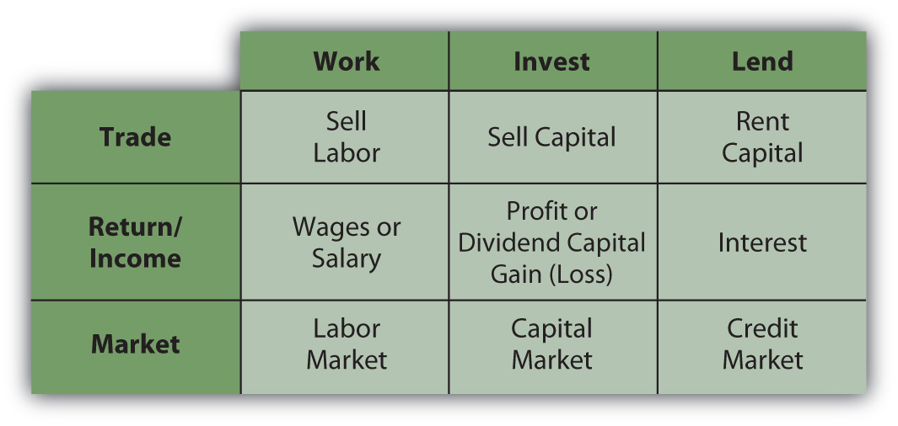
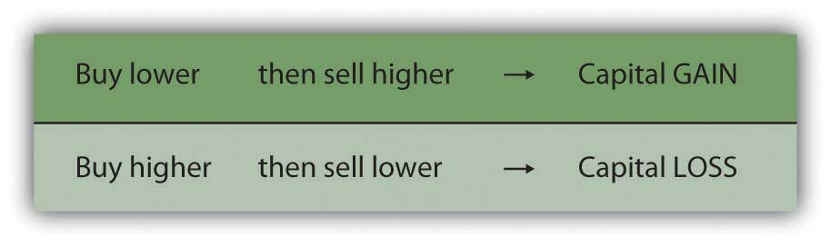
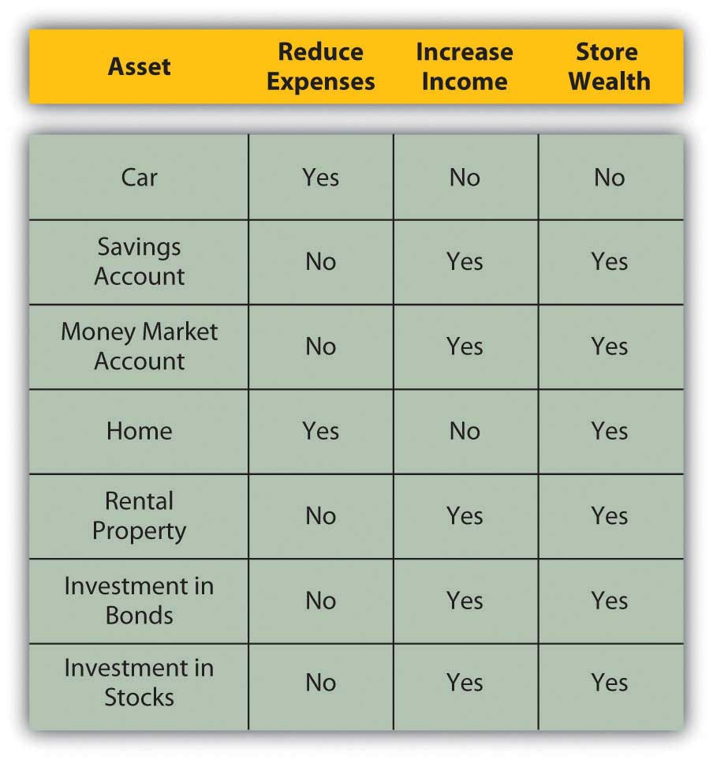
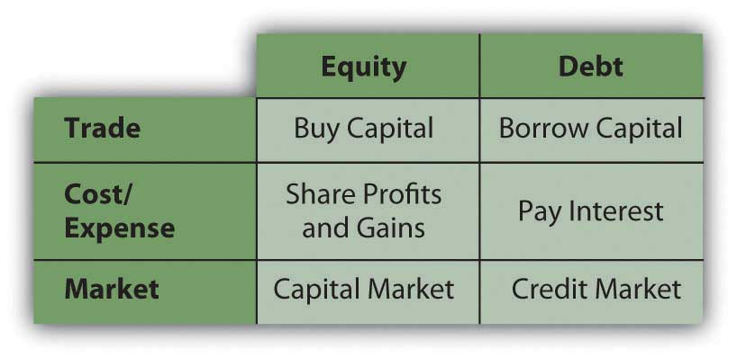
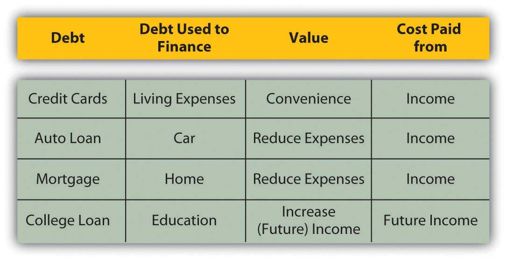

Money, says the proverb, makes money. When you have got a little, it is often easy to get more. The great difficulty is to get that little.
Adam Smith, The Wealth of NationsAdam Smith, The Wealth of Nations (New York: The Modern Library, 2000), Book I, Chapter ix. Originally published in 1776.
Personal finance addresses the “great difficulty” of getting a little money. It is about learning to manage income and wealth to satisfy desires in life or to create more income and more wealth. It is about creating productive assetsResources that can be used to create future economic benefit, such as increasing income, decreasing expenses, or storing wealth, as an investment. and about protecting existing and expected value in those assets. In other words, personal finance is about learning how to get what you want and how to protect what you’ve got.
There is no trick to managing personal finances. Making good financial decisions is largely a matter of understanding how the economy works, how money flows through it, and how people make financial decisions. The better your understanding, the better your ability to plan, take advantage of opportunities, and avoid disappointments. Life can never be planned entirely, of course, and the best-laid plans do go awry, but anticipating risks and protecting against them can minimize exposure to the inevitable mistakes and “the hazards and vicissitudes”Franklin D. Roosevelt, remarks when signing the Social Security Act, August 14, 1935. Retrieved from the Social Security Administration archives, http://www.socialsecurity.gov/history/fdrstmts.html#signing (accessed November 23, 2009). of life.
Personal finance is the process of paying for or financing a life and a way of living. Just as a business must be financed—its buildings, equipment, use of labor and materials, and operating costs must be paid for—so must a person’s possessions and living expenses. Just as a business relies on its revenues from selling goods or services to finance its costs, so a person relies on income earned from selling labor or capital to finance costs. You need to understand this financing process and the terms used to describe it. In the next chapter, you’ll look at how to account for it.
IncomeEarnings of a given period. In the case of an indivdual or household, this is generally cash from wages, interest, dividends, or assets (such as rental income from real estate) that can be used for consumption or saved. is what is earned or received in a given period. There are various terms for income because there are various ways of earning income. Income from employment or self-employment is wages or salary. Deposit accounts, like savings accounts, earn interest, which could also come from lending. Owning stock entitles the shareholder to a dividend, if there is one. Owning a piece of a partnership or a privately held corporation entitles one to a draw.
The two fundamental ways of earning income in a market-based economy are by selling labor or selling capital. Selling labor means working, either for someone else or for yourself. Income comes in the form of a paycheck. Total compensation may include other benefits, such as retirement contributions, health insurance, or life insurance. Labor is sold in the labor market.
Selling capital means investing: taking excess cash and selling it or renting it to someone who needs liquidityNearness to cash, or how easily and cheaply—with low transaction costs—an asset can be turned into cash. (access to cash). Lending is renting out capital; the interest is the rent. You can lend privately by direct arrangement with a borrower, or you can lend through a public debt exchange by buying corporate, government, or government agency bonds. Investing in or buying corporate stock is an example of selling capital in exchange for a share of the company’s future value.
You can invest in many other kinds of assets, like antiques, art, coins, land, or commodities such as soybeans, live cattle, platinum, or light crude oil. The principle is the same: investing is renting capital or selling it for an asset that can be resold later, or that can create future income, or both. Capital is sold in the capital market and lent in the credit market—a specific part of the capital market (just like the dairy section is a specific part of the supermarket). Figure 2.2 "Sources of Income" shows the sources of income.
Figure 2.2 Sources of Income
In the labor market, the price of labor is the wage that an employer (buyer of labor) is willing to pay to the employee (seller of labor). For any given job, that price is determined by many factors. The nature of the work defines the education and skills required, and the price may reflect other factors as well, such as the status or desirability of the job.
In turn, the skills needed and the attractiveness of the work determine the supply of labor for that particular job—the number of people who could and would want to do the job. If the supply of labor is greater than the demand, if there are more people to work at a job than are needed, then employers will have more hiring choices. That labor market is a buyers’ market, and the buyers can hire labor at lower prices. If there are fewer people willing and able to do a job than there are jobs, then that labor market is a sellers’ market, and workers can sell their labor at higher prices.
Similarly, the fewer skills required for the job, the more people there will be who are able to do it, creating a buyers’ market. The more skills required for a job, the fewer people there will be to do it, and the more leverage or advantage the seller has in negotiating a price. People pursue education to make themselves more highly skilled and therefore able to compete in a sellers’ labor market.
When you are starting your career, you are usually in a buyers’ market (unless you have some unusual gift or talent), if only because of your lack of experience. As your career progresses, you have more, and perhaps more varied, experience and presumably more skills, and so can sell your labor in more of a sellers’ market. You may change careers or jobs more than once, but you would hope to be doing so to your advantage, that is, always to be gaining bargaining power in the labor market.
Many people love their work for many reasons other than the pay, however, and choose it for those rewards. Labor is more than a source of income; it is also a source of many intellectual, social, and other personal gratifications. Your labor nevertheless is also a tradable commodity and has a market value. The personal rewards of your work may ultimately determine your choices, but you should be aware of the market value of those choices as you make them.
Your ability to sell labor and earn income reflects your situation in your labor market. Earlier in your career, you can expect to earn less than you will as your career progresses. Most people would like to reach a point where they don’t have to sell labor at all. They hope to retire someday and pursue other hobbies or interests. They can retire if they have alternative sources of income—if they can earn income from savings and from selling capital.
Capital markets exist so that buyers can buy capital. Businesses always need capital and have limited ways of raising it. Sellers and lenders (investors), on the other hand, have many more choices of how to invest their excess cash in the capital and credit markets, so those markets are much more like sellers’ markets. The following are examples of ways to invest in the capital and credit markets:
The market for any particular investment or asset may be a sellers’ or buyers’ market at any particular time, depending on economic conditions. For example, the market for real estate, modern art, sports memorabilia, or vintage cars can be a buyers’ market if there are more sellers than buyers. Typically, however, there is as much or more demand for capital as there is supply. The more capital you have to sell, the more ways you can sell it to more kinds of buyers, and the more those buyers may be willing to pay. At first, however, for most people, selling labor is their only practical source of income.
ExpensesThe costs of consumption or daily living. are costs for items or resources that are used up or consumed in the course of daily living. Expenses recur (i.e., they happen over and over again) because food, housing, clothing, energy, and so on are used up on a daily basis.
When income is less than expenses, you have a budget deficitA shortfall of available funds created when income is less than the expenses.—too little cash to provide for your wants or needs. A budget deficit is not sustainable; it is not financially viable. The only choices are to eliminate the deficit by (1) increasing income, (2) reducing expenses, or (3) borrowing to make up the difference. Borrowing may seem like the easiest and quickest solution, but borrowing also increases expenses, because it creates an additional expense: interest. Unless income can also be increased, borrowing to cover a deficit will only increase it.
Better, although usually harder, choices are to increase income or decrease expenses. Figure 2.3 "Budget Deficit" shows the choices created by a budget deficit.
Figure 2.3 Budget Deficit
When income for a period is greater than expenses, there is a budget surplusAn excess of available funds created when income is greater than the expenses.. That situation is sustainable and remains financially viable. You could choose to decrease income by, say, working less. More likely, you would use the surplus in one of two ways: consume more or save it. If consumed, the income is gone, although presumably you enjoyed it.
If saved, however, the income can be stored, perhaps in a piggy bank or cookie jar, and used later. A more profitable way to save is to invest it in some way—deposit in a bank account, lend it with interest, or trade it for an asset, such as a stock or a bond or real estate. Those ways of saving are ways of selling your excess capital in the capital markets to increase your wealth. The following are examples of savings:
Figure 2.5 "Budget Surplus" shows the choices created by a budget surplus.
Figure 2.5 Budget Surplus
There are two other important kinds of costs aside from expenses that affect your financial life. Suppose you can afford a new jacket or new boots, but not both, because your resources—the income you can use to buy clothing—are limited. If you buy the jacket, you cannot also buy the boots. Not getting the boots is an opportunity costThe cost of sacrificing the next best choice because of the choice made; the value of the next best choice, which is forgone once a choice is made. of buying the jacket; it is cost of sacrificing your next best choice.
In personal finance, there is always an opportunity cost. You always want to make a choice that will create more value than cost, and so you always want the opportunity cost to be less than the benefit from trade. You bought the jacket instead of the boots because you decided that having the jacket would bring more benefit than the cost of not having the boots. You believed your benefit would be greater than your opportunity cost.
In personal finance, opportunity costs affect not only consumption decisions but also financing decisions, such as whether to borrow or to pay cash. Borrowing has obvious costs, whereas paying with your own cash or savings seems costless. Using your cash does have an opportunity cost, however. You lose whatever interest you may have had on your savings, and you lose liquidity—that is, if you need cash for something else, like a better choice or an emergency, you no longer have it and may even have to borrow it at a higher cost.
When buyers and sellers make choices, they weigh opportunity costs, and sometimes regret them, especially when the benefits from trade are disappointing. Regret can color future choices. Sometimes regret can keep us from recognizing sunk costsCosts that have been incurred in past transactions and cannot be recovered..
Sunk costs are costs that have already been spent; that is, whatever resources you traded are gone, and there is no way to recover them. Decisions, by definition, can be made only about the future, not about the past. A trade, when it’s over, is over and done, so recognizing that sunk costs are truly sunk can help you make better decisions.
For example, the money you spent on your jacket is a sunk cost. If it snows next week and you decide you really do need boots, too, that money is gone, and you cannot use it to buy boots. If you really want the boots, you will have to find another way to pay for them.
Unlike a price tag, opportunity cost is not obvious. You tend to focus on what you are getting in the trade, not on what you are not getting. This tendency is a cheerful aspect of human nature, but it can be a weakness in the kind of strategic decision making that is so essential in financial planning. Human nature also may make you focus too much on sunk costs, but all the relish or regret in the world cannot change past decisions. Learning to recognize sunk costs is important in making good financial decisions.
As defined earlier in this chapter, an asset is any item with economic value that can be converted to cash. Assets are resources that can be used to create income or reduce expenses and to store value. The following are examples of tangible (material) assets:
When you sell excess capital in the capital markets in exchange for an asset, it is a way of storing wealth, and hopefully of generating income as well. The asset is your investment—a use of your liquidity. Some assets are more liquid than others. For example, you can probably sell your car more quickly than you can sell your house. As an investor, you assume that when you want your liquidity back, you can sell the asset. This assumes that it has some liquidity and market value (some use and value to someone else) and that it trades in a reasonably efficient market. Otherwise, the asset is not an investment, but merely a possession, which may bring great happiness but will not serve as a store of wealth.
Assets may be used to store wealth, create income, and reduce future expenses.
If the asset is worth more when it is resold than it was when it was bought, then you have earned a capital gainWealth created when an asset is sold for more than the original investment.: the investment has not only stored wealth but also increased it. Of course, things can go the other way too: the investment can decrease in value while owned and be worth less when resold than it was when bought. In that case, you have a capital lossWealth lost when an asset is sold for less than the original investment.. The investment not only did not store wealth, it lost some. Figure 2.7 "Gains and Losses" shows how capital gains and losses are created.
Figure 2.7 Gains and Losses
The better investment asset is the one that increases in value—creates a capital gain—during the time you are storing it.
Some assets not only store wealth but also create income. An investment in an apartment house stores wealth and creates rental income, for example. An investment in a share of stock stores wealth and also perhaps creates dividend income. A deposit in a savings account stores wealth and creates interest income.
Some investors care more about increasing asset value than about income. For example, an investment in a share of corporate stock may produce a dividend, which is a share of the corporation’s profit, or the company may keep all its profit rather than pay dividends to shareholders. Reinvesting that profit in the company may help the company to increase in value. If the company increases in value, the stock increases in value, increasing investors’ wealth. Further, increases in wealth through capital gains are taxed differently than income, making capital gains more valuable than an increase in income for some investors.
On the other hand, other investors care more about receiving income from their investments. For example, retirees who no longer have employment income may be relying on investments to provide income for living expenses. Being older and having a shorter horizon, retirees may be less concerned with growing wealth than with creating income.
Some assets are used to reduce living expenses. Purchasing an asset and using it may be cheaper than arranging for an alternative. For example, buying a car to drive to work may be cheaper, in the long run, than renting one or using public transportation. The car typically will not increase in value, so it cannot be expected to be a store of wealth; its only role is to reduce future expenses.
Sometimes an asset may be expected to both store wealth and reduce future expenses. For example, buying a house to live in may be cheaper, in the long run, than renting one. In addition, real estate may appreciate in value, allowing you to realize a gain when you sell the asset. In this case, the house has effectively stored wealth. Appreciation in value depends on the real estate market and demand for housing when the asset is sold, however, so you cannot count on it. Still, a house usually can reduce living expenses and be a potential store of wealth.
Figure 2.8 "Assets and the Roles of Assets" shows the roles of assets in reducing expenses, increasing income, and storing wealth.
Figure 2.8 Assets and the Roles of Assets
The choice of investment asset, then, depends on your belief in its ability to store and increase wealth, create income, or reduce expenses. Ideally, your assets will store and increase wealth while increasing income or reducing expenses. Otherwise, acquiring the asset will not be a productive use of liquidity. Also, in that case the opportunity cost will be greater than the benefit from the investment, since there are many assets to choose from.
Buying capital, that is, borrowing enables you to invest without first owning capital. By using other people’s money to finance the investment, you get to use an asset before actually owning it, free and clear, assuming you can repay out of future earnings.
Borrowing capital has costs, however, so the asset will have to increase wealth, increase earnings, or decrease expenses enough to compensate for its costs. In other words, the asset will have to be more productive to earn enough to cover its financing costs—the cost of buying or borrowing capital to buy the asset.
Buying capital gives you equity, borrowing capital gives you debt, and both kinds of financing have costs and benefits. When you buy or borrow liquidity or cash, you become a buyer in the capital market.
You can buy capital from other investors in exchange for an ownership share or equityAn ownership share in an asset, entitling the holder to a share of the future gain (or loss) in asset value and of any future income (or loss) created., which represents your claim on any future gains or future income. If the asset is productive in storing wealth, generating income, or reducing expenses, the equity holder or shareholder or owner enjoys that benefit in proportion to the share of the asset owned. If the asset actually loses value, the owner bears a portion of the loss in proportion to the share of the asset owned. The cost of equityThe cost of having to share the benefits—capital gains or income (dividends)—from the investment. is in having to share the benefits from the investment.
For example, in 2004 Google, a company that produced a very successful Internet search engine, decided to buy capital by selling shares of the company (shares of stock or equity securities) in exchange for cash. Google sold over 19 million shares for a total of $1.67 billion. Those who bought the shares were then owners or shareholders of Google, Inc. Each shareholder has equity in Google, and as long as they own the shares they will share in the profits and value of Google, Inc. The original founders and owners of Google, Larry Page and Sergey Brin, have since had to share their company’s gains (or income) or losses with all those shareholders. In this case, the cost of equity is the minimum rate of return Google must offer its shareholders to compensate them for waiting for their returns and for bearing some riskIn finance, the probability that the value of an asset, income, or investment may decline in the future. that the company might not do as well in the future.
Borrowing is renting someone else’s money for a period of time, and the result is debtBorrowed capital, a liability, a loan that must be repaid.. During that period of time, rent or interestThe cost of debt expressed as an annual percentage of the principal. must be paid, which is a cost of debtThe cost of borrowing capital because of having to pay interest on the principal.. When that period of time expires, all the capital (the principalThe original amount of borrowed capital (a loan). amount borrowed) must be given back. The investment’s earnings must be enough to cover the interest, and its growth in value must be enough to return the principal. Thus, debt is a liability, an obligation for which the borrower is liable.
In contrast, the cost of equity may need to be paid only if there is an increase in income or wealth, and even then can be deferred. So, from the buyer’s point of view, purchasing liquidity by borrowing (debt) has a more immediate effect on income and expenses. Interest must be added as an expense, and repayment must be anticipated.
Figure 2.9 "Sources of Capital" shows the implications of equity and debt as the sources of capital.
Figure 2.9 Sources of Capital
Debt is a way to make an investment that could not otherwise be made, to buy an asset (e.g., house, car, corporate stock) that you couldn’t buy without borrowing. If that asset is expected to provide enough benefit (i.e., increase value or create income or reduce expense) to compensate for its additional costs, then the debt is worth it. However, if debt creates additional expense without enough additional benefit, then it is not worth it. The trouble is, while the costs are usually known up front, the benefits are not. That adds a dimension of risk to debt, which is another factor in assessing whether it’s desirable.
For example, after the housing boom began to go bust in 2008, homeowners began losing value in their homes as housing prices dropped. Some homeowners are in the unfortunate position of owing more on their mortgage than their house is currently worth. The costs of their debt were knowable upfront, but the consequences—the house losing value and becoming worth less than the debt—were not.
Debt may also be used to cover a budget deficit, or the excess of expenses over income. As mentioned previously, however, in the long run the cost of the debt will increase expenses that are already too big, which is what created the deficit in the first place. Unless income can also be increased, debt can only aggravate a deficit.
The value of debt includes the benefits of having the asset sooner rather than later, something that debt financing enables. For example, many people want to buy a house when they have children, perhaps because they want bedrooms and bathrooms and maybe a yard for their children. Not far into adulthood, would-be homebuyers may not have had enough time to save enough to buy the house outright, so they borrow to make up the difference. Over the length of their mortgage (real estate loan), they pay the interest.
The alternative would be to rent a living space. If the rent on a comparable home were more than the mortgage interest (which it often is, because a landlord usually wants the rent to cover the mortgage and create a profit), it would make more sense, if possible, to borrow and buy a home and be able to live in it. And, extra bedrooms and bathrooms and a yard are valuable while children are young and live at home. If you wait until you have saved enough to buy a home, you may be much older, and your children may be off on their own.
Another example of the value of debt is using debt to finance an education. Education is valuable because it has many benefits that can be enjoyed over a lifetime. One benefit is an increase in potential earnings in wages and salaries. Demand for the educated or more skilled employee is generally greater than for the uneducated or less-skilled employee. So education creates a more valuable and thus higher-priced employee.
It makes sense to be able to maximize value by becoming educated as soon as possible so that you have as long as possible to benefit from increased income. It even makes sense to invest in an education before you sell your labor because your opportunity cost of going to school—in this case, the “lost” wages of not working—is lowest. Without income or savings (or very little) to finance your education, typically, you borrow. Debt enables you to use the value of the education to enhance your income, out of which you can pay back the debt.
The alternative would be to work and save and then get an education, but you would be earning income less efficiently until you completed your education, and then you would have less time to earn your return. Waiting decreases the value of your education, that is, its usefulness, over your lifetime.
In these examples (Figure 2.11 "Debt: Uses, Value, and Cost"), debt creates a cost, but it reduces expenses or increases income to offset that cost. Debt allows this to happen sooner than it otherwise could, which allows you to realize the maximum benefit for the investment. In such cases, debt is “worth” it.
Figure 2.11 Debt: Uses, Value, and Cost
View the video “Paying Off Student Loans”: http://videos.howstuffworks.com/marketplace/4099-paying-off-student-loans-video.htm. Students fear going into debt for their education or later have difficulty paying off student loans. This video presents personal financial planning strategies for addressing this issue.
Personal finance is not just about getting what you want; it is also about protecting what you have. Since the way to accumulate assets is to create surplus capital by having an income larger than expenses, and since you rely on income to provide for living expenses, you also need to think about protecting your income. One way to do so is through diversificationThe strategy of reducing risk by spreading income and investments among a number of different kinds, sources, and locations., or spreading the risk.
You already know not to put all your eggs in one basket, because if something happens to that basket, all the eggs are gone. If the eggs are in many baskets, on the other hand, the loss of any one basket would mean the loss of just a fraction of the eggs. The more baskets, the smaller your proportional loss would be. Then if you put many different baskets in many different places, your eggs are diversified even more effectively, because all the baskets aren’t exposed to the same environmental or systematic risks.
Diversification is more often discussed in terms of investment decisions, but diversification of sources of income works the same way and makes the same kind of sense for the same reasons. If sources of income are diverse—in number and kind—and one source of income ceases to be productive, then you still have others to rely on.
If you sell your labor to only one buyer, then you are exposed to more risk than if you can generate income by selling your labor to more than one buyer. You have only so much time you can devote to working, however. Having more than one employer could be exhausting and perhaps impossible. Selling your labor to more than one buyer also means that you are still dependent on the labor market, which could suffer from an economic cycle such as a recession affecting many buyers (employers).
Mark, for example, works as a school counselor, tutors on the side, paints houses in the summers, and buys and sells sports memorabilia on the Internet. If he got laid off from his counseling job, he would lose his paycheck but still be able to create income by tutoring, painting, and trading memorabilia.
Similarly, if you sell your capital to only one buyer—invest in only one asset—then you are exposed to more risk than if you generate income by investing in a variety of assets. Diversifying investments means you are dependent on trade in the capital markets, however, which likewise could suffer from unfavorable economic conditions.
Mark has a checking account, an online money market account, and a balanced portfolio of stocks. If his stock portfolio lost value, he would still have the value in his money market account.
A better way to diversify sources of income is to sell both labor and capital. Then you are trading in different markets, and are not totally exposed to risks in either one. In Mark’s case, if all his incomes dried up, he would still have his investments, and if all his investments lost value, he would still have his paycheck and other incomes. To diversify to that extent, you need surplus capital to trade. This brings us full circle to Adam Smith, quoted at the beginning of this chapter, who said, essentially, “It takes money to make money.”
Diversifying sources of income in both the labor market and the capital markets is the best hedge against risks in any one market.
Record your answers to the following questions in your personal finance journal or My Notes. How can you diversify your sources of income to spread the risk of losing income? How can you diversify your investments to spread the risk of losing return on investment?